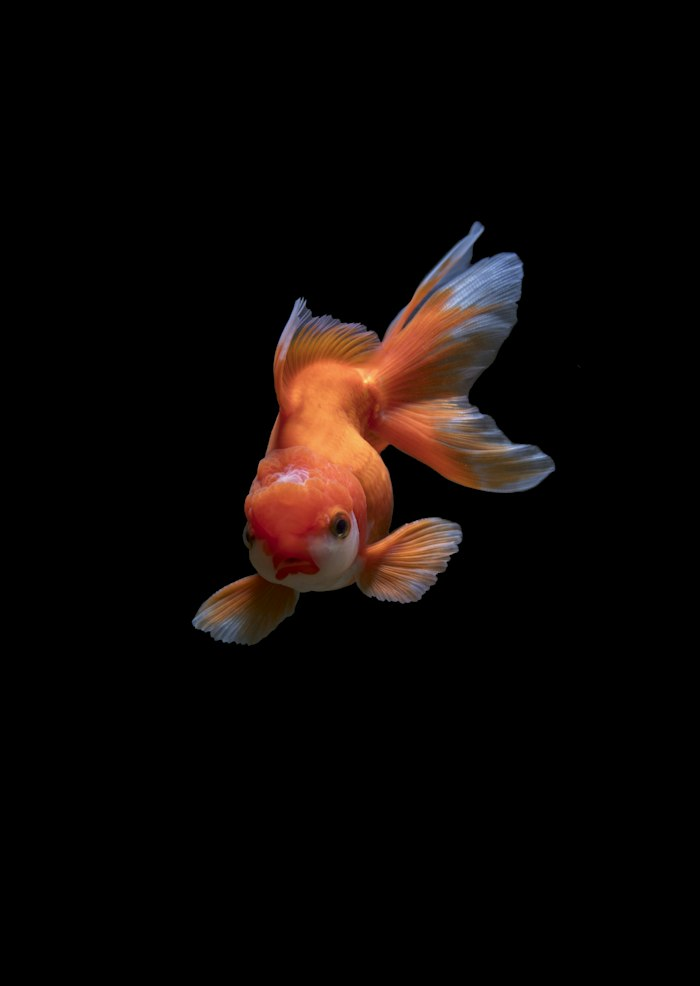

Tatlı su akvaryumlarında en çok bakılan balık türleri, davranışları ve yaşam alanları rehberi.

Akvaryuma yeni adım atanlar için en uygun gruptur. Su şartlarındaki küçük hataları tolere edebilirler, çok hareketlidirler ve renk tonları son derece geniştir.
Su Değerleri: 24°C - 28°C arası su sıcaklığını ve orta sertlikteki suları severler.
Üreme Şekli: Yumurtlamazlar, yavrular anne karnında gelişip doğrudan canlı olarak yüzer halde doğar. Akvaryumda bitki varsa yavrular arasına saklanıp hayatta kalabilir.
Karakter: Tamamen barışçıldırlar, diğer küçük tatlı su balıklarıyla sorunsuz yaşarlar.
Muhteşem kuyrukları ve zeki bakışlarıyla bilinir. Doğada durgun pirinç tarlalarında yaşadıkları için labirent organları sayesinde atmosferdeki havayı soluyabilirler.
Tek Bakım Kuralı: İki erkek beta aynı akvaryumda asla bir arada barınamaz, ölümcül kavgalar ederler. Tek başına veya sakin dip balıklarıyla bakılmalıdır.
Akvaryum Şartları: Aşırı akıntıdan hoşlanmazlar. Geniş yapraklı canlı bitkilerin yaprakları üzerinde dinlenmeyi severler. İdeal sıcaklık 25°C - 27°C civarıdır.
Beslenme: Etçil ağırlıklıdır. Kaliteli beta peletleri ve kurutulmuş kan kurtlarını iştahla yerler.
Güney Amerika kökenli bu küçük balıklar, akvaryuma renk katan en popüler sürü balıklarıdır.
Sürü Dinamiği: Tek veya iki adet bakıldığında kendilerini güvensiz hisseder, solgunlaşır ve saklanırlar. Doğal yüzüş hareketlerini sergilemeleri için en az 6-8 adetlik grup kurulmalıdır.
Bitkili Tanklar: Koyu zemin kumu ve bol canlı bitkili ortamlarda neon mavisi ve kırmızı şeritleri adeta parlar.
Su İhtiyacı: Yumuşak, hafif asidik ve berrak sularda sağlıklı ve uzun ömürlü yaşarlar.
Akvaryumun doğal temizleyicileridir ve tanktaki biyolojik dengenin korunmasına büyük destek sağlarlar.
Çöpçü Balığı (Corydoras): Taban kumunu bıyıklarıyla karıştırarak yukarıdan düşen artık yemleri bulup tüketirler. Kumun keskin olmaması bıyık sağlığı için önemlidir.
Cüce Vatoz: Camlarda ve kütüklerde oluşan taze yosunları vantuz ağzıyla kazır. Doğal kütük kemirmek sindirimleri için gereklidir.
Uyum: Hem çöpçüler hem cüce vatozlar diğer balıklara karşı tamamen zararsız ve uysaldır.